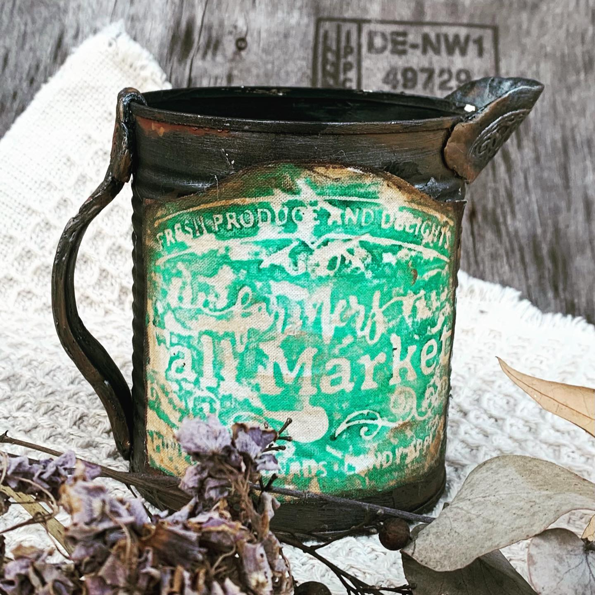
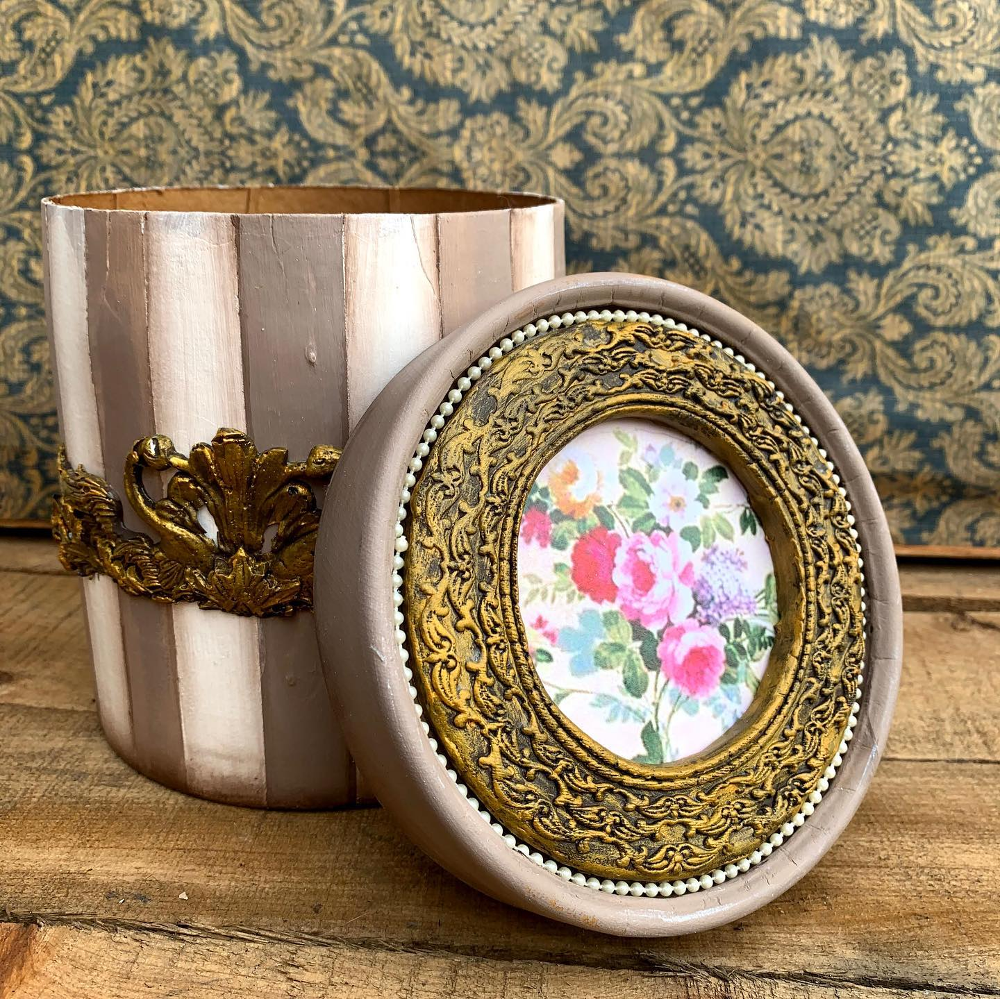

Taller Virtual de Arte DECORATIVO
Te dejo clases online y tips de pintura sencillos que te ayudarán a decorar tu casa, oficina o tu propio taller. Es un sitio en el que descubrí que puedo llegar hasta vos, estando en mi CASA. También podes tomar mis clases online. En el taller lo que les enseño a mis alumnas básicamente es que "nada se consigue sin trabajo o practica".
Vive Simple!
Tip Rapido! Reciclado
Mira este video y transforma tu casa!
| Clases Online Agosto | |||
| Obra | Tecnica | Fecha | Profesora |
|  | Mix media | Viernes 13 - Agosto | Monica Godfroit |
|  | Mix media | Viernes 27 - Agosto | Monica Godfroit |